Questões sobre transformações lineares
De que forma funções arbitrárias podem ser expressas como transformações lineares?
O domínio e codomínio da função devem ser convertidos em espaços vetoriais.
Por exemplo, f(x)=x.
O ponto x é o vetor (0,x).
O ponto f(x) é o vetor (0, f(x)).
Então, pela função f(x) os vetores (0,x) são convertidos em vetores (0,f(x)).
Dimensão
Um vetor é uma lista de elementos, cada elemento relativo a uma dimensão. Em um vetor numérico, os elementos denotam coordenadas, ou distâncias de uma origem, naquela dimensão. Por exemplo, o vetor (2,1,4) denota o conjunto das três coordenadas: (0,2) no plano da dimensão formada pelos vetores (1,0, 0) e (0,1,0); (0,1) no plano da dimensão formada pelos vetores (0,1,0) e (0,0,1); e (0,4) no plano da dimensão formada pelos vetores (1,0,0) e (0,0,1). Cada uma das dimensões se forma por um par de vetores linearmente independentes (a ver), e um trio de vetores linearmente independentes forma, por combinação, três dimensões.
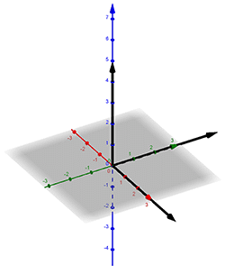
(Base do espaço vetorial 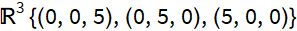)
Produto escalar
Um espaço vetorial admite algumas operações diferentes de produto: uma é o produto escalar, em que “escalar” não se refere a um dos operandos ser um escalar (os operandos são vetores), mas sim ao resultado ser um escalar, e que é a soma das multiplicações de cada elemento:
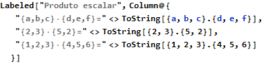
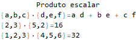
Estes são os produtos escalares dos vetores de tamanho um:
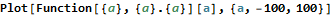
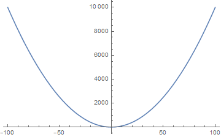
Estes são os produtos escalares dos vetores de tamanho dois:

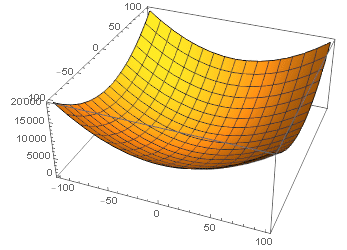
O produto escalar é um polinômio de grau 2 em n dimensões.
Magnitude
Um vetor forma um polígono ou volume, dependendo em sua dimensionalidade. Por exemplo, o vetor (2,3) forma um triângulo. A magnitude do vetor é a distância euclidiana entre os componentes não-origem do vetor. Por exemplo:
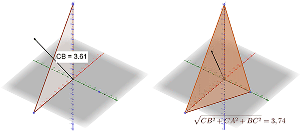
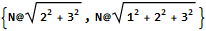
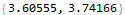
O produto escalar entre dois vetores representa a multiplicação das magnitudes dos vetores. Por exemplo:
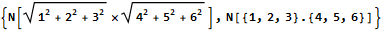
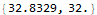
Um vetor gera outro quando é uma multiplicação escalar do outro. Ex.: 4·(0,0,5)=(0,0,20), então (0,0,5) gera (0,0,20).
Produto vetorial
Outro produto é o produto vetorial, que é um vetor.
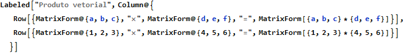
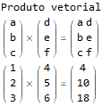
O produto misto é primeiro, o produto vetorial de dois vetores, depois o produto escalar deste vetorial com outro vetor.
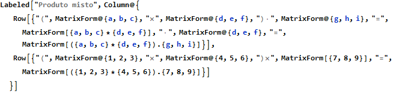
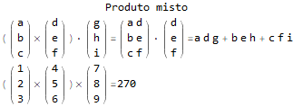
Dependência linear
A soma de vetores pode descrever vetores arbitrários em uma dimensão de um espaço vetorial.
Aos vetores gerados ou expressos como soma de outros vetores, denominamos vetores linearmente dependentes destes.
Para utilizarmos vetores diferentes dos vetores-base na soma, porém, é necessário gerar os demais vetores que não os base.
Os demais vetores podem ser gerados através da multiplicação dos vetores da base.
Assim, todos os vetores somáveis em múltiplos são obtidos e formam uma dimensão.
| 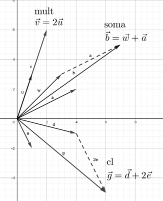 |
| (Vetores multiplicados, somados e somados em múltiplos) |
O espaço vetorial é a combinação de uma ou mais dimensões.